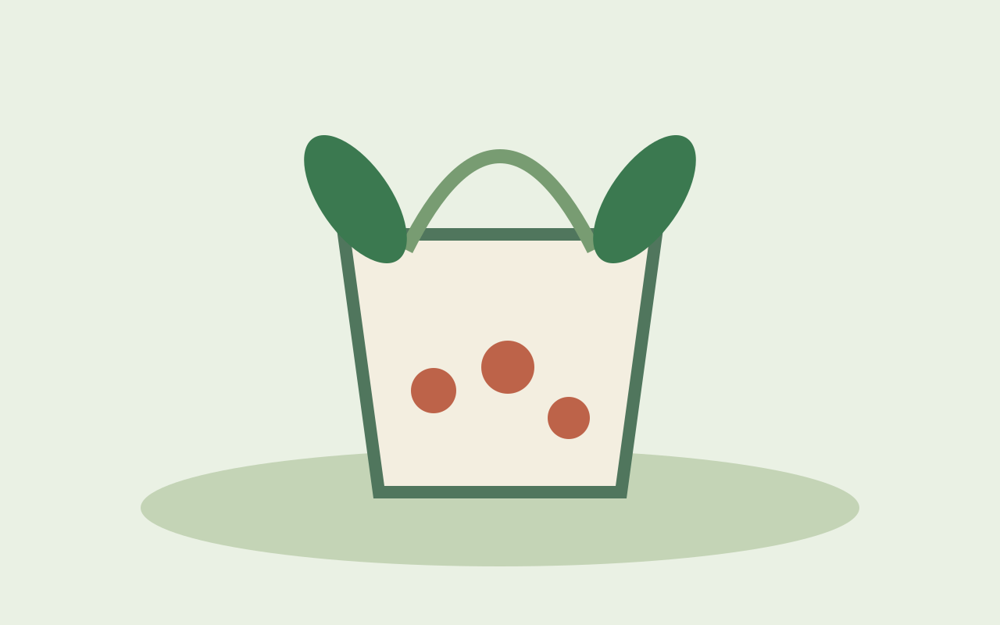
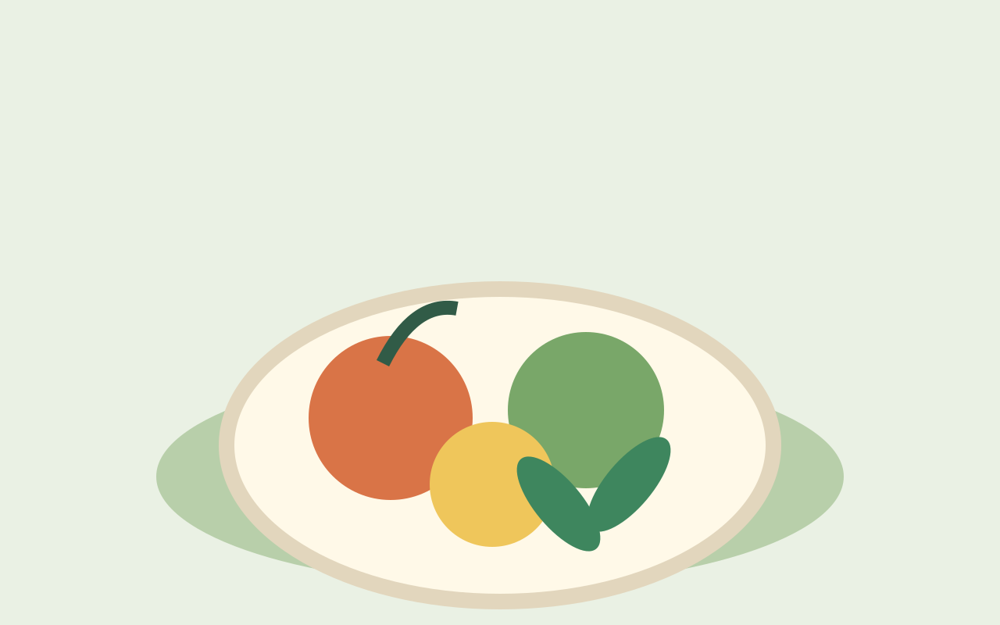
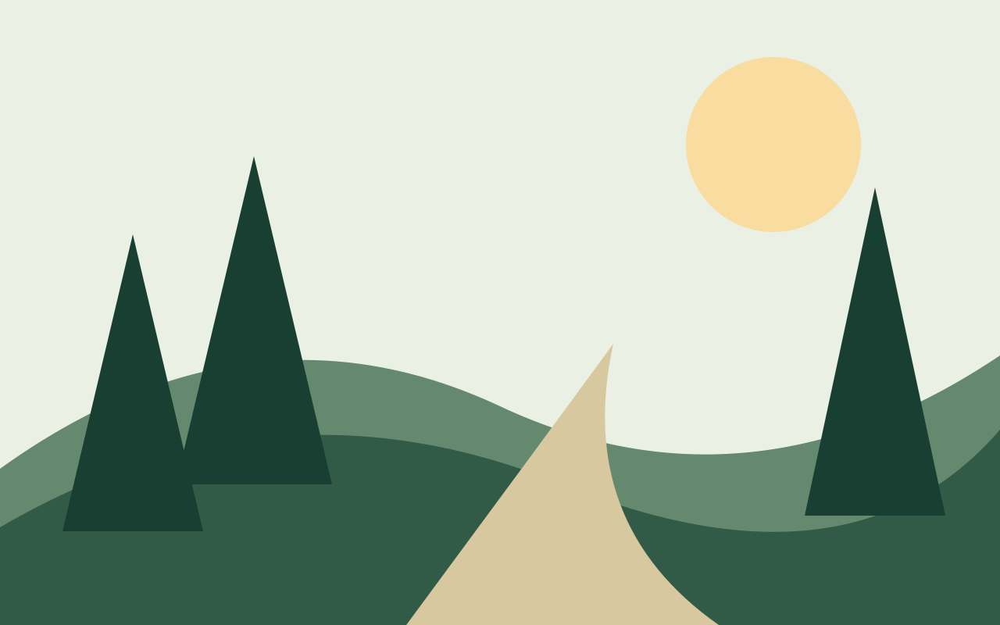
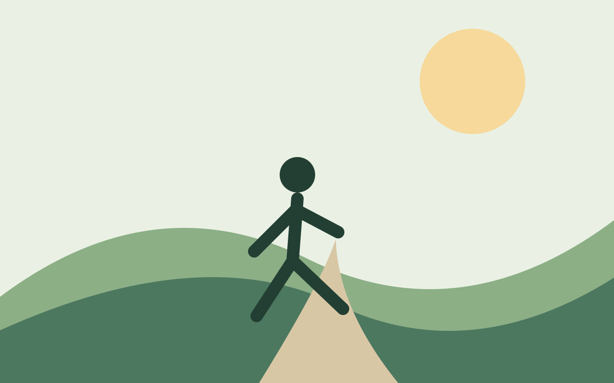

01 · Eastern wisdom
Traditions · Context · Evidence
Ancient wisdom. Modern science. Everyday living.
润庐养生之道 · 传统智慧，现代科学，日常实践。
Sagesse ancienne, science moderne, gestes du quotidien.
Sabiduría ancestral, ciencia moderna y vida cotidiana.
Lecture 01 · Why do we eat? From survival to quality of life.
Leçon 01 · Pourquoi mangeons-nous ? De la survie à la qualité de vie.
Lección 01 · ¿Por qué comemos? De la supervivencia a la calidad de vida.
延伸阅读：从70公斤到63.5公斤：个人实践追踪。这是个案观察，不是医学因果证明。
Related reading: From 70 kg to 63.5 kg: a personal follow-up. A personal observation, not proof of causation.
À lire aussi : De 70 kg à 63,5 kg : suivi personnel. Un témoignage, pas une preuve de causalité.
Lectura relacionada: De 70 kg a 63,5 kg: seguimiento personal. Una observación, no una prueba de causalidad.
Lecture 01 — Understanding Stress: Why Body and Mind React Together. An evidence-grounded introduction to stress and when support matters.
Leçon 01 — Comprendre le stress : pourquoi le corps et l'esprit réagissent ensemble.
Lección 01 — Comprender el estrés: por qué reaccionan juntos cuerpo y mente.
12讲 · 中英法西四语 · 完整出版。选择章节可直接阅读本语言全文；所有章节均可切换其他三种语言。
12 lectures · 4 languages · all published. Open a chapter below in English; each article also links to its other three editions.
12 leçons · 4 langues · publication intégrale. Ouvrez chaque chapitre en français et changez de langue depuis l’article.
12 lecciones · 4 idiomas · publicación íntegra. Lea cada capítulo en español y cambie de idioma dentro del artículo.
Rediscover health through everyday movement, and make room for rest as well as activity.
Redécouvrir la santé grâce aux mouvements quotidiens et trouver sa place pour le repos.
Redescubrir la salud a través del movimiento cotidiano, sin olvidar el descanso.
Walking, wellbeing, realistic step goals and the value of staying active at every age.
Comprendre les bienfaits de la marche sans transformer les 10 000 pas en obligation.
El valor de caminar para la salud, sin obsesionarnos con una cifra universal de pasos.
Strength, balance, nutrition and recovery for independence at every age.
Renforcement, équilibre, nutrition et récupération au service de l'autonomie.
Fuerza, equilibrio, nutrición y recuperación para conservar la autonomía.
Understand aerobic fitness, the talk test and sensible progression.
Comprendre l'endurance, le test de la parole et une progression sûre.
Descubrir la resistencia aeróbica, la prueba del habla y el progreso gradual.
Everyday balance, mobility and safer ways to keep moving.
Préserver son équilibre, sa mobilité et sa sécurité au quotidien.
Cuidar el equilibrio, la movilidad y la prevención de caídas.
Break up extended sitting and build realistic movement into daily routines.
Interrompre les longues périodes assises en respectant les contraintes professionnelles.
Encontrar pausas de movimiento prácticas y seguras durante la jornada.
Learn about sleep stages, recovery and practical habits without miracle claims.
Comprendre les phases du sommeil, la récupération et les habitudes durables.
Fases del sueño, recuperación y hábitos realistas, sin mitos de desintoxicación.
How circadian rhythms, light and shift schedules shape sleep and alertness.
Lumière, rythmes circadiens et travail posté : vivre avec son horloge interne.
El papel de la luz, los ritmos circadianos y los turnos en el descanso.
Understand ordinary tiredness, recovery needs and signs that call for care.
Reconnaître la fatigue habituelle, les besoins de repos et les signes d'alerte.
Diferenciar el cansancio cotidiano y las señales para reducir el esfuerzo o consultar.
Age-appropriate, safe movement for children, working adults and older people.
Des activités adaptées à la jeunesse, à la vie adulte et au grand âge.
Actividades seguras y adecuadas para cada etapa, con fuerza y equilibrio al envejecer.
Practical goals, fallback plans and sustainable movement in everyday life.
Des objectifs accessibles et des solutions réalistes pour bouger durablement.
Metas realistas, alternativas para días difíciles y hábitos sostenibles.
The season finale: movement, recovery and making peace with the passing years.
Pour conclure la saison : bouger, récupérer et avancer avec le temps.
El cierre de temporada: actividad, recuperación y vivir en paz con el tiempo.
Wellness is a lifelong conversation. We explore traditions respectfully, examine scientific evidence carefully, and turn useful ideas into sustainable daily habits.
不分国界，不分地域，不分时区。我们尊重传统智慧，审视现代证据，将值得借鉴的知识转化为可持续的日常习惯。
Une exploration respectueuse des traditions, des preuves scientifiques et des habitudes durables.
Exploramos tradiciones, evidencia científica y hábitos sostenibles para la vida diaria.

Traditions · Context · Evidence

Nutrition · Movement · Sleep

Comparison · Questions · Discovery

Small steps · Lasting habits
Not simply more years, but the freedom, vitality and meaning within those years.
Read the full English essay →Pas seulement des années, mais leur vitalité et leur sens.
Lire l’article complet →No solo más años, sino vitalidad y sentido en cada uno.
Leer el artículo completo →An introduction to two different ways of thinking about balance, change and the human body. Explore the full essay in English.
Deux cadres distincts pour réfléchir à l'équilibre du corps. Article complet disponible en chinois.
Dos perspectivas distintas sobre el equilibrio y el cambio. Artículo completo disponible en español.
How traditional concepts differ from blood circulation, oxygen transport and metabolism. Full essay available in Chinese.
Une distinction entre concepts traditionnels et physiologie. Article complet en français.
Una distinción entre conceptos tradicionales y fisiología. Artículo completo en español.
How food cultures and nutrition science can inform healthier everyday choices.
Une rencontre entre traditions culinaires et science de la nutrition.
Un diálogo entre culturas alimentarias y ciencia de la nutrición.
Sleep stages, circadian rhythms and sustainable rest.
Les phases du sommeil, les rythmes biologiques et le repos durable.
Etapas del sueño, ritmos biológicos y descanso sostenible.
A personal approach to step counts, movement and health.
Un regard sur les pas, le mouvement et la santé au quotidien.
Una mirada a los pasos, el movimiento y la salud cotidiana.
How to adapt to daylight, heat and cold with evidence in mind.
Adapter ses habitudes aux saisons avec discernement.
Adaptarse a las estaciones con una mirada científica.
Evidence, limits and safety in time-restricted eating.
Evidence, limitations and safety of acupuncture.
Preuves, limites et sécurité de l'acupuncture.
Evidencia, límites y seguridad de la acupuntura.
Strength, balance and everyday independence.
Force, équilibre et autonomie quotidienne.
Fuerza, equilibrio e independencia cotidiana.
More than years lived: function and wellbeing.
Les années vécues, l'autonomie et le bien-être.
Años vividos, autonomía y bienestar.
The final lecture: wellbeing in real life.
La conclusion : le bien-être dans la vie réelle.
La conclusión: bienestar en la vida real.
Life, nature, time, place and evidence: a long-form exploration of the ancient idea of harmony.
Une exploration des liens entre la vie, la nature, le temps et les preuves scientifiques.
Una exploración de la vida, la naturaleza, el tiempo y las pruebas científicas.
人们谈起养生，往往先想到吃什么、喝什么、补什么。但真正值得思考的是：我们希望通过养生，获得怎样的生活？
健康不只是检查报告上的数字。它还关乎清晨醒来时的精神、走路时的从容、与亲友相聚的心情，以及面对生活变化时的适应能力。
中医传统强调顺应时令、饮食有节、起居有常。这些观念有其历史文化背景，但不能把所有传统解释直接等同于现代医学事实。现代健康科学则通过研究饮食、身体活动、睡眠与疾病风险之间的关系，不断修正我们对健康的理解。
两者值得对话，却不必强行混为一谈。传统理论可以帮助我们理解不同文化如何看待身体；科学研究则帮助我们判断某种具体做法是否有效、安全，以及适合谁。
真正可持续的养生，不应成为焦虑的来源。没有哪一种食物可以包治百病，也没有哪一个数字能概括所有人的健康。比起追逐神奇秘方，建立规律作息、合理饮食、适量运动、维持社会联系并接受适当预防保健，通常更值得长期投入。
年轻时，健康让我们有勇气探索世界；中年时，它支持我们承担责任；年长时，它帮助我们尽可能保有独立与尊严。养生不是与岁月对抗，而是学习在不同的人生阶段，与自己的身体认真相处。
我们珍惜生命的长度，更珍惜生命的质量。 从今天开始，润庐愿与读者一起，以好奇心学习，以审慎态度求证，以耐心践行。
以上为一般健康教育，不构成个体诊断或治疗建议。存在疾病、运动限制或特殊健康需求者，应咨询合格医护人员。
When people talk about wellness, they often begin with what to eat, drink or supplement. A deeper question is: what kind of life do we hope to protect?
Health is more than a number on a laboratory report. It is the energy to greet the morning, the freedom to move, the joy of connection and the capacity to adapt as life changes.
Traditional Chinese approaches have long discussed seasonal rhythms, moderation and daily routines. These ideas deserve historical respect, but traditional explanations should not automatically be treated as established biomedical facts. Modern health science continually tests and revises our understanding of food, activity, sleep and disease risk.
These perspectives can be discussed without pretending they are identical. Tradition offers cultural ways of understanding the body; scientific evidence helps evaluate whether particular interventions are effective, safe and appropriate.
Sustainable wellness should not create fear. No single food is a miracle cure, and no one number captures everyone's health. Consistent sleep, balanced eating, suitable movement, meaningful relationships and appropriate preventive care deserve more attention than shortcuts.
At every age, wellness serves a different purpose: exploration, resilience, independence and dignity. We seek not merely more years, but better life within those years.
General education only; not personal medical advice.
Quand on parle de bien-être, on pense souvent d’abord à ce qu’il faudrait manger, boire ou ajouter à son alimentation. Mais une question plus importante se pose : quelle vie souhaitons-nous préserver ?
La santé ne se réduit pas aux chiffres d’un bilan. Elle se manifeste aussi dans l’énergie du matin, la liberté de se déplacer, le plaisir d’être avec ses proches et la capacité de s’adapter aux changements.
Les traditions chinoises ont depuis longtemps réfléchi au rythme des saisons, à la modération et à la régularité des habitudes. Elles méritent d’être comprises dans leur contexte culturel et historique. Cela ne signifie toutefois pas que toutes leurs explications constituent des faits biomédicaux démontrés. La recherche moderne, de son côté, examine et réévalue les liens entre alimentation, activité physique, sommeil et risques pour la santé.
Ces deux perspectives peuvent dialoguer sans être confondues. Les traditions éclairent les différentes façons de penser le corps ; les études scientifiques permettent d’évaluer plus précisément l’efficacité, la sécurité et les limites d’une pratique.
Prendre soin de soi ne devrait pas devenir une source d’inquiétude. Aucun aliment ne guérit tous les maux et aucun indicateur ne résume à lui seul la santé d’une personne. Des repas variés, une activité adaptée, un sommeil suffisamment régulier, des liens sociaux et une prévention appropriée sont des pistes plus solides que la recherche d’une solution miracle.
À chaque âge, le bien-être prend un sens différent : découvrir le monde, assumer ses responsabilités, préserver son autonomie et vivre avec dignité. Il ne s’agit pas de lutter contre le temps, mais d’apprendre à vivre avec son corps tout au long de la vie.
Nous ne cherchons pas seulement à ajouter des années à la vie, mais à donner davantage de vie à nos années. C’est dans cet esprit que RUNLU WELLNESS commence son chemin : avec curiosité, prudence et persévérance.
Contenu éducatif général, sans diagnostic ni conseil médical personnalisé. En cas de problème de santé ou de limitation physique, consultez un professionnel qualifié.
Cuando hablamos de bienestar, solemos empezar por lo que debemos comer, beber o tomar como suplemento. Pero hay una pregunta más profunda: ¿qué clase de vida queremos proteger?
La salud no es solo una cifra en un análisis. También es la energía con la que comenzamos el día, la libertad de movernos, la alegría de compartir tiempo con otras personas y la capacidad de adaptarnos a los cambios.
Las tradiciones chinas llevan siglos reflexionando sobre los ritmos estacionales, la moderación y las rutinas. Merecen comprenderse dentro de su contexto histórico y cultural, pero eso no convierte automáticamente todas sus explicaciones en hechos biomédicos demostrados. Por su parte, la ciencia moderna estudia y revisa continuamente la relación entre alimentación, actividad física, sueño y riesgo de enfermedad.
Ambas perspectivas pueden dialogar sin confundirse. La tradición ayuda a comprender distintas formas culturales de interpretar el cuerpo; la investigación científica permite evaluar la eficacia, la seguridad y los límites de prácticas concretas.
El bienestar sostenible no debería producir ansiedad. Ningún alimento cura todas las enfermedades y ninguna cifra resume por sí sola la salud de una persona. Una alimentación variada, movimiento apropiado, sueño regular, vínculos significativos y atención preventiva adecuada suelen merecer más atención que las soluciones milagrosas.
En la juventud, la salud nos permite explorar; en la madurez, afrontar responsabilidades; y en edades avanzadas, conservar en la medida de lo posible la autonomía y la dignidad. Cuidarnos no significa luchar contra el tiempo, sino aprender a convivir con nuestro cuerpo en cada etapa.
No buscamos únicamente añadir años a la vida, sino añadir vida a nuestros años. Así comienza RUNLU WELLNESS: con curiosidad, rigor y paciencia.
Contenido educativo general; no constituye diagnóstico ni consejo médico individual. Ante problemas de salud o limitaciones físicas, consulta con un profesional cualificado.
Editorial note: introductory reflections and low-risk general habits; future evidence-specific articles will include direct research references and limitations. Illustrations: original RUNLU Wellness vector artwork, hosted locally.